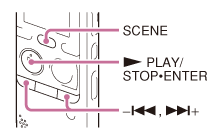
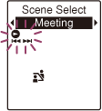

IC RecorderICD-PX333/PX333F
Selecting a recording scene for each situation
According to various recording scene, you can change the items for recording, such as “REC Mode”, “Mic Sensitivity”, etc., to the recommended settings in bulk (Scene Select).

- Press SCENE in the stop mode.
The Scene Select window will be displayed.
- Press –
 or
or  + to select a scene you want, and then press
+ to select a scene you want, and then press  PLAY/STOP・ENTER.
PLAY/STOP・ENTER.

The indicator corresponding to the selected scene is displayed.
Descriptions of menu items
You can select one of the menu items available.
 Meeting:
Meeting:
To record in a variety of situations, such as recording in a conference room.
 Voice Notes:
Voice Notes:
To record dictation with a microphone in front of your mouth.
 Interview:
Interview:
To record human voice at a distance of 1 to 2 meters (40 in. to 80 in.).
 Lecture:
Lecture:
To record a wide range of sound, such as a lecture in a classroom or a chorus lesson.
 Audio IN:
Audio IN:
To record from external equipment, such as a portable CD/MD player or a tape recorder, connected to the IC recorder via an audio output connector (stereo mini-jack). Also used for dubbing.
Note
- You cannot set a scene during recording.
- When 60 seconds have passed without any operation after the Scene Select window appeared, the stop mode window will be displayed.